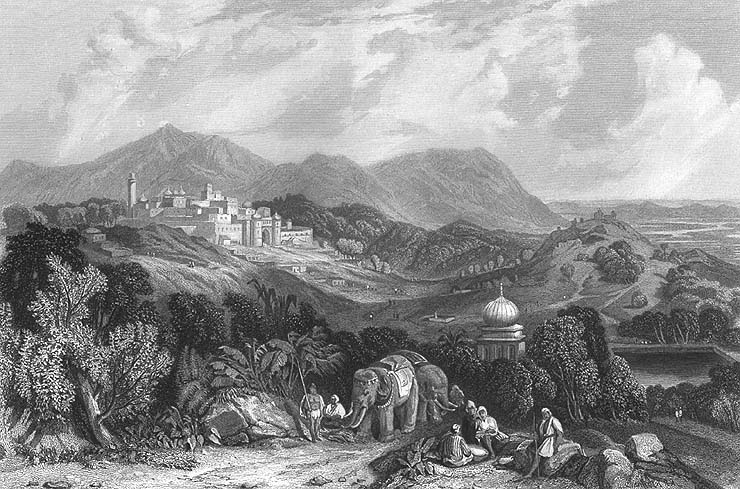
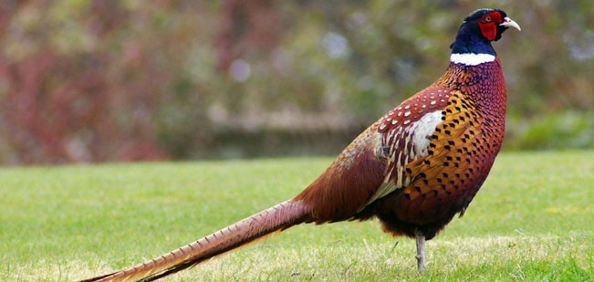

Nahan
Nahan is a town in Himachal Pradesh in India and is the headquarters of the Sirmaur District. It is also the location of the Indian Army Special Forces Training School. It was the capital of the former Sirmur princely state. Nahan is situated on a hill top in the Shiwalik Hills, overlooking green hills. Traditionally, saints and princes are linked with the origin of Nahan. The city was founded as in 1621 by Raja Karam Prakash. Another version recalls a saint who lived with a companion named Nahar on the site where the Nahan palace now stands. "Nahar" means 'don't kill' and the town probably takes its name from an incident when a king was trying to kill a lion and the saint said Nahar, that is 'do not kill it'. The name of the saint was Baba Banwari Das.
At an altitude of 932 m, Nahan is a used as a base for visits to the surrounding areas such as Renuka Lake, Paonta Sahib, Trilokpur and the Suketi Fossil Park.[citation needed] It is watered by a man-made lake and has several temples and gardens. Nahan has got the crown to organize the second Municipal Corporation in India, after Kolkata.[citation needed] Underground sewerage system in this town is unbeatable and hence it bears the title to be a neat and clean town.[citation needed] Well planned streets make all the long distances calm and traffic free.[original research?] The narrow fields are used by the pedestrians to move fast on foot to avoid traffic.
Churdhar Sanctury
Churdhar Sanctuary is located in Sirmour district of the Indian state of Himachal Pradesh. The sanctuary is named after the Churdhar Peak. Churdhar (elevation of 3,647 metres; 11,965 feet) is the highest peak in Sirmour district and is also the highest peak in the outer Himalayas. The peak has a great religious significance for the people of Sirmour, Shimla, Chaupal and Solan of Himachal Pradesh and Dehradun of Uttrakhand
Churdhar is a holy place related with Shri Shirgul Maharaj (Chureshwar Maharaj), a deity widely worshipped in Sirmour and Chaupal. The place can be approached by lots of routes but the main routes are from Nohradhar, Sirmour of 14 km and Sarahan, Chaupal of 8 km.[1] The Churdhar Peak is mentioned in the book, The Great Arc, by John Keay but is referred to as The Chur. It is from this peak that George Everest made many astronomical readings and sightings of the Himalaya mountains around 1834. He was the Surveyor General of India and did the initial survey of the full length of India as well as some very accurate measurements of the earth's curvature.
Renuka Lake
Renuka lake is in the Sirmaur district of Himachal Pradesh in India and it is 672 m above the sea level. It is the largest lake in Himachal Pradesh, with a circumference of about 3214 m. This lake was named after the goddess Renuka. It is well connected by the road. Boating is available on the lake. A lion safari and a zoo are there at Renuka. It is the site of an annual fair held in November.

On the eve of Prabodhini Ekadashi, the Five day long International level Shri Renuka Ji fair begins with the arrival of son Lord Parshuram at Shri Renuka Ji the Lake in Himachal, the home of his divine mother Shri Renuka Ji. During five day fair several lakhs of devotees from all over the country arrives here to witness the holy occasion of divine meeting of Lord Parshum &his mother Renuka Ji . According to Puranas, the Renuka Tirth is considered as birthplace of Lord Parshuram, the sixth incarnation of Lord Vishnu. Maharish Jamdagni and his wife Bhagwati Renuka Ji had meditated for long time at a hillock known as Tape Ka Tiba near Renuka lake. With the blessings of Lord Shiva, Lord Vishnu fulfilled divine promise and took birth as their son. Sixth incarnation of Lord Vishnu and son of Renuka Ji pleased Lord Shiva with the performation of Tapa [high intensity meditation] got a new name Parshuram after getting divine weapon Parshu from Lord Shiva. He has been referred every where in the Shashtras with the popular name Parshuram and not his childhood name Ram [as per Brahmand Puran], which he got from his parents.